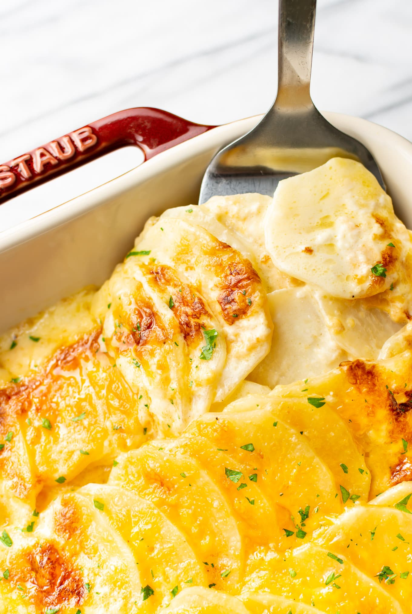

Scalloped Potato Recipe

Description
The best part of scalloped potatoes is arguably the golden top layer with its crackling edges and crispy brown bits. It gives a perfect umami contrast to the creamy, tender potatoes underneath. So why not just make the whole thing like that? Turns out, you can (and should!). And it's as simple as swapping out your baking dish for a sheet pan. A greater surface area with fewer layers means more of that magically browned and bubbling crust. Grab your humble sheet pan and give this method a go—you'll wonder why you didn't try it sooner.
Ingredients
- Onions: As the developer points out, "The caramelized onions add that punch of sweetness to balance the richness of the Cheddar and Parmesan."
- Heavy Cream and Aromatics: These will give you that decadent, savory sauce you expect from scalloped potatoes.
- Potatoes: Make sure to opt for starchier potatoes—like Yukon Gold as listed in the recipe—which help thicken the cream sauce during cooking.
- Cheese: Parmesan and Cheddar round out the whole dish. "[We] really like Cabot Extra-Sharp Cheddar or Old Croc...but any brand works just fine," says our Test Kitchen team.
Steps
- Start by prepping the onions if you plan to include them (which we highly recommend you do) since they take a while to reach caramelization.
- While they are cooking, you can get the cream sauce ready—steeping it with garlic, thyme, and rosemary. Right before you are ready to assemble, cut the potatoes. A mandoline will make thinly slicing the Yukon Golds easy and consistent since we're aiming for 1/8-inch-thick rounds. If you don't have a mandoline, carefully slice the potatoes with a sharp knife as evenly as possible.
- Once the onions and cream are ready and the potatoes are sliced, arrange half of the potato slices into a single, overlapping layer on a prepared baking sheet, and sprinkle with salt, caramelized onions, and Parmesan.
- Layer on the remaining potato slices then pour the hot cream mixture evenly over top. Pop your sheet pan into a 450-degree F oven, covered, and bake for about 20 minutes.
- Check to make sure the potatoes are fork-tender before uncovering the dish and sprinkling the Cheddar cheese overtop to finish baking for another 15 minutes or so—until the cheese is golden and bubbling.